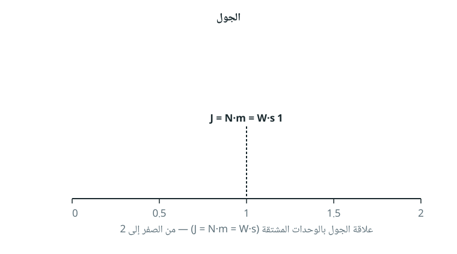

الجول
Joule
الجول وحدة الطاقة والشغل في النظام الدولي، ورمزه J، ويساوي نيوتن·متر أو واط·ثانية. هو الشغل المبذول بقوة نيوتن واحد على مسافة متر واحد في اتجاهها.
الجول هو وحدة الطاقة والشغل وكمية الحرارة في النظام الدولي للوحدات، ورمزه J. وهو وحدة مشتقة تُعرَّف بأنها الشغل المبذول حين تؤثر قوة نيوتن واحد على جسم فيحرّكه مسافة متر واحد في اتجاه القوة، أي 1 J = 1 N·m. ويساوي أيضاً واطاً واحداً لمدة ثانية واحدة، أي 1 J = 1 W·s. ويُعبَّر عنه بالوحدات الأساسية كيلوغرام·متر²/ثانية². والجول وحدة صغيرة على المقياس اليومي: رفع كتلة كيلوغرام واحد مسافة متر واحد يحتاج نحو 9.806 65 جول. والطاقة كمية قياسية لا متجهة، رغم أن الشغل حاصل ضرب قوة متجهة في إزاحة متجهة. مثال: تسخين لتر ماء درجة واحدة مئوية يحتاج نحو 4186 جول.
كيف تعمل الظاهرة؟
الطاقة تتحول بين صورها ولا تفنى: كيميائية إلى حرارية في الاحتراق، وكهربائية إلى حرارية في المقاومة، وميكانيكية إلى حرارية في الاحتكاك. والجول يقيس مقدار التحول أياً كانت صورته. فحين تؤثر قوة على جسم وتحرّكه في اتجاهها، يُبذل شغل يتحول إلى طاقة حركية أو إلى حرارة. وحين يُسخَّن جسم، تزيد طاقته الداخلية بمقدار الحرارة الممتصة. وحين يُرفع جسم، تزيد طاقته الكامنة. وكل هذه المقادير تُقاس بالجول نفسه، وهو ما يجعل الجول وحدة جامعة بين فروع الفيزياء.
العلاقة بالأرقام
1 J = 1 N·m = 1 kg·m²/s² = 1 W·s. والشغل W = F·d·cosθ. والطاقة الحركية E_k = ½mv². والطاقة الكامنة E_p = mgh. والحرارة Q = m·c·ΔT. والطاقة الكهربائية E = P·t = V·I·t. مثال: رفع 1 kg متراً = 9.806 65 J. وتسخين 1 L ماء درجة = 1×4186×1 = 4186 J. وكتلة 2 kg بسرعة 3 m/s: E_k = ½×2×9 = 9 J.
مفاهيم متقاربة
الجول طاقة والنيوتن قوة: التشابه البعدي بين N·m وJ لا يجعل العزم طاقة. والجول ليس الواط: الواط جول لكل ثانية. والكالوري 4.184 J، والكيلوواط·ساعة 3.6×10⁶ J، والكيلوجول 10³ J. والطاقة كمية قياسية، بخلاف القوة والإزاحة المتجهتين. والحرارة والشغل صورتان لانتقال الطاقة لا خاصيتان حالة، والطاقة الداخلية خاصية حالة.
حدود التطبيق
لا تُجمع الطاقات بلا تمييز الصور عند الحاجة إلى حساب الكفاءة، لأن بعضها غير قابل للتحول الكامل. وفي الأنظمة النسبية تُستبدل الطاقة الحركية الكلاسيكية بالعلاقة النسبية، ولا تبقى E_k = ½mv² صحيحة عند السرعات العالية. وفي الكيمياء تُستعمل الكيلوجول والكالوري عملياً، ويجب التصريح بالوحدة. والجول لا يقيس القدرة، فوصف جهاز بجول بلا زمن ناقص.

| الكمية | القيمة | المصدر |
|---|---|---|
| علاقة الجول بالوحدات المشتقة | 1 J = N·m = W·s | [1] |
| الجول بالوحدات الأساسية | 1 kg·m²/s² | [2] |
| إنثالبي تبخير الماء عند 100 °م | 2256.4 kJ/kg | [3] |
المصادر
- 1 The International System of Units (SI), 9th edition (2019) — BIPM — Bureau International des Poids et Mesures (2019). www.bipm.org/en/publications/si-brochure · اطُّلع عليه 2026-11-21
- 2 The International System of Units (SI), 9th edition (2019) — BIPM — Bureau International des Poids et Mesures (2019). www.bipm.org/en/publications/si-brochure · اطُّلع عليه 2026-11-21
- 3 NISTIR 5078: Thermodynamic Properties of Water — Tabulation from the IAPWS Formulation 1995 — NIST — National Institute of Standards and Technology (1998). nvlpubs.nist.gov/nistpubs/Legacy/IR/nistir5078.pdf · اطُّلع عليه 2026-11-21
استشهد بهذا المصطلح
الصيغتان مبنيتان من بيانات الصفحة نفسها: العنوان والتاريخ ورابط النسخة المنشورة.
الجول — Joule. (2026). ديوان المعرفة — انفراد. https://infiradev.com/diwan/terms/term-joule.html
@misc{term-joule2026,
title = {الجول},
titleaddon = {Joule},
howpublished = {{ديوان المعرفة — انفراد} — مرجع علمي عربي},
year = {2026},
url = {https://infiradev.com/diwan/terms/term-joule.html},
urldate = {2026-11-26},
note = {مراجعة علمية: hermes (مراجعة معتمدة 2026-11-26)}
}
راجعه: hermes (مراجعة معتمدة 2026-11-26) · 2026-11-26 · آخر تحديث 2026-11-21